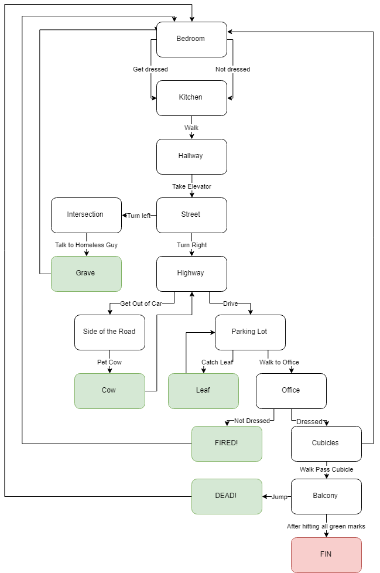

When first playing the game, following what the game is telling you will lead to a loop. (ie. getting dressed, going to work, and sitting at your cubicle). This should be a hint to the player to test the boundaries of the game. Noticing the differently colored objects in the game influences the player to interact with the object, which helps and permits different variations of the game. The interactions are limited which keeps the narrative on track. Limited in a way that when a certain interaction is done, the object disappears.
The graphics of the game is simple and plain. The chosen color scheme adds to this effect. This reflects the life of the main character, who is currently trapped in the same daily routine.
The objects in the game that the player interacted with to complete the tasks were the only ones that have color. This draws attention to the player which influences them to interact with it in the first place. All the important interactions builds the story up as well. As an example, when the player interacted with the homeless guy, he was taken to a "quiet place." This ended up being the grave which forshadows the end of the story. The same goes for the last leaf on the tree, which some may interpret as the end of life, which again, foreshadows the end of the story.
There are five tasks that needs to be completed in order to finish the story. These are highlighted in green. Once a task was completed, you will notice that the person/thing you interacted with will disappear. For example, the leaf will not be there anymore on every iteration of the game after you catch it. The same happens with the homeless guy and the cow. Once all tasks/events are completed, you can finish the story by going all the way to the office's balcony. Here you will see yourself jumping off. This is at least how I interpreted it. You will also notice that everyone else is gone; your wife, the old lady, the boss, and all coworkers will be gone.
|  |